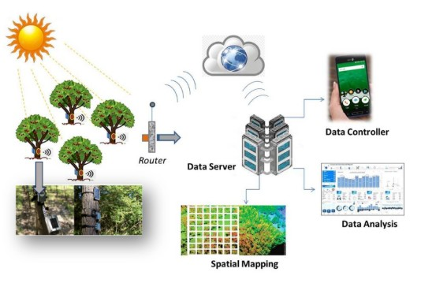
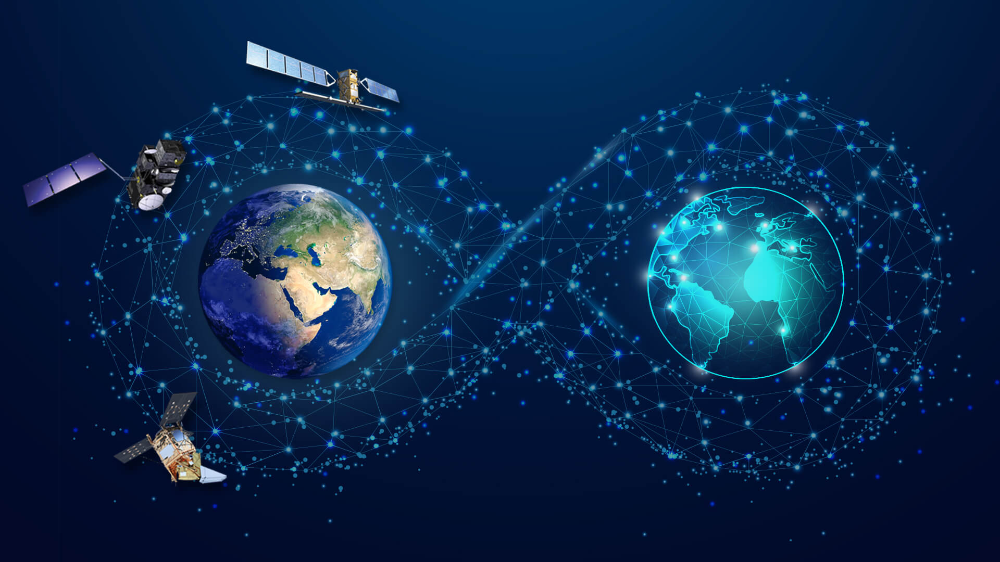
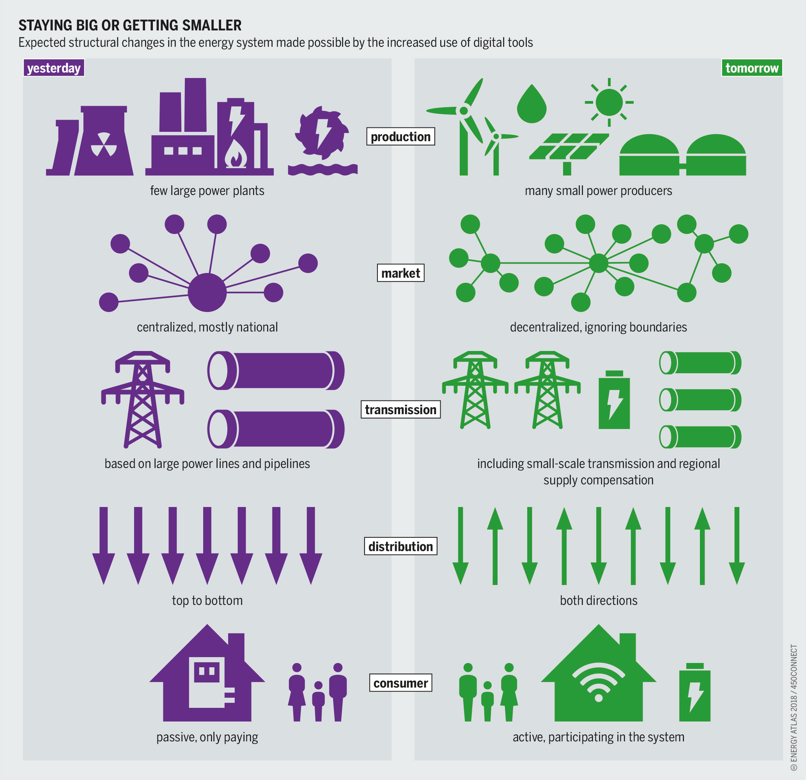

Sicurezza delle Reti e Protezione dei Dati Climatici
Il cambiamento climatico è una delle sfide globali più critiche del nostro tempo. Il monitoraggio dei suoi effetti avviene attraverso reti internazionali di sensori meteorologici, marini e satellitari che raccolgono costantemente dati sull’atmosfera e sulle temperature del pianeta.
In questo scenario, la sicurezza delle reti gioca un ruolo vitale: garantisce che queste informazioni non vengano alterate, cancellate o manipolate. Senza dati integri, gli studi scientifici e le decisioni politiche per la tutela dell’ambiente verrebbero irrimediabilmente compromessi.

Green Computing: Virtualizzazione e Risparmio Energetico
L’informatica può contribuire direttamente alla lotta contro il cambiamento climatico attraverso l’ottimizzazione delle risorse. L’utilizzo di macchine virtuali permette di ridurre il numero di server fisici necessari, diminuendo drasticamente il consumo energetico dei data center e, di conseguenza, l’impronta di carbonio del settore tecnologico.
Parallelamente, il cloud computing offre soluzioni di resilienza fondamentali. I sistemi di allerta precoce per eventi estremi come alluvioni o tempeste devono essere ospitati su infrastrutture cloud sicure e ridondate, capaci di restare operative anche durante catastrofi naturali.
Tecnologie sicure e sostenibili sono strumenti concreti per monitorare il pianeta e costruire un futuro più responsabile.
Iniziative Globali: Destination Earth e Smart Grids
Uno dei progetti più ambiziosi è Destination Earth (DestinE), un’iniziativa europea che punta a creare un "gemello digitale" della Terra. Questo sistema simula l’evoluzione del clima per prevedere i cambiamenti futuri con estrema precisione, richiedendo reti ultra-sicure per gestire enormi volumi di dati sensibili.

Un altro esempio fondamentale sono le Smart Grids energetiche. Queste reti elettriche intelligenti utilizzano l'informatica per distribuire in modo efficiente l’energia da fonti rinnovabili. La protezione informatica è indispensabile per prevenire cyber-attacchi che potrebbero causare blackout o interruzioni dei servizi energetici puliti.
Soluzioni e Proposte Tecniche
Per integrare sicurezza e sostenibilità, si propongono le seguenti azioni concrete:
| Azione | Beneficio per il Clima e la Sicurezza |
|---|---|
| Modello AAA | Garantisce che solo autorità verificate possano inviare allerte climatiche. |
| Cloud Sostenibile | Utilizzo di server alimentati al 100% da energie rinnovabili. |
| Tunneling VPN | Protezione dell'accesso remoto ai sistemi di monitoraggio ambientale. |
| Green Computing | Riduzione degli sprechi energetici tramite virtualizzazione avanzata. |
